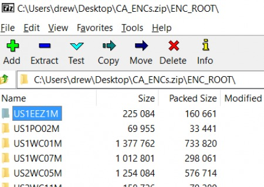
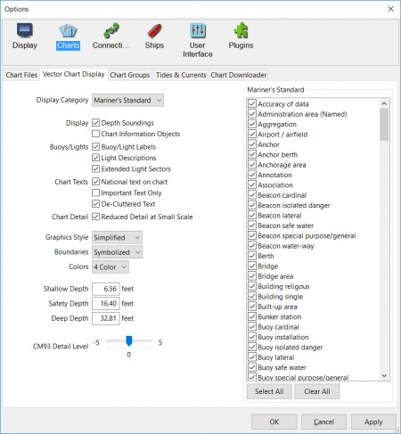
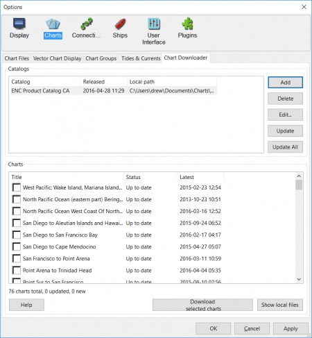

Chart Downloader is the easier, preferred way to install charts, but at times manual techniques are useful.
For this example, we will use the freely distributed NOAA US charts. NOAA's Chart Download website Bring this page up in your browser. On the left,
Click on Download ENCs (electronic navigational charts for Vector Style charts ENC (vs Raster Charts)
Download your desired region. For this example, we selected the State of California, CA_ENCs.zip

Unzip all those folders (US1EEZ1M, etc…) to a location on your hard drive. For this example we used My Documents/charts.
Start OpenCPN, and point it to your chart directory Settings > Charts > Chart Files > Add Directory (remember My Documents is actually something like C:\Users\user-name\Documents\Charts)
Click Select Folder
Tick boxes “Scan Charts and Update Database” and “Force Full Database Rebuild”
Fix up a few of your Chart settings, mine are below, more info Vector Display Tab

Check your new ENC charts into the Chart Downloader to stay current with Chart Updates, more info Chart Downloader Tab
Go to Settings > Charts > Chart Downloader Click Add and navigate to the section that you downloaded. For example it is USA > ENC > by States > CA - California

You should also hit the Select Folder button and navigate to where you put your ENC charts. Once you hit OK on that window, a list of all your charts should populate in the bottom half of the window.
Click Update All, and your charts will update, and continue to update. that's it!